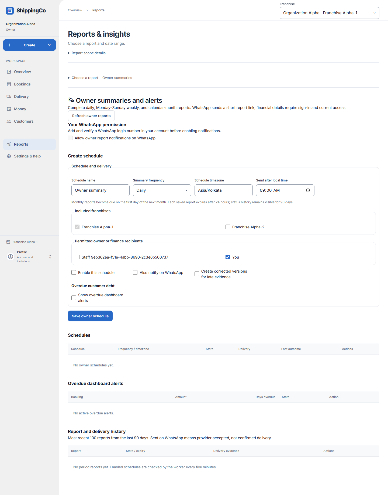
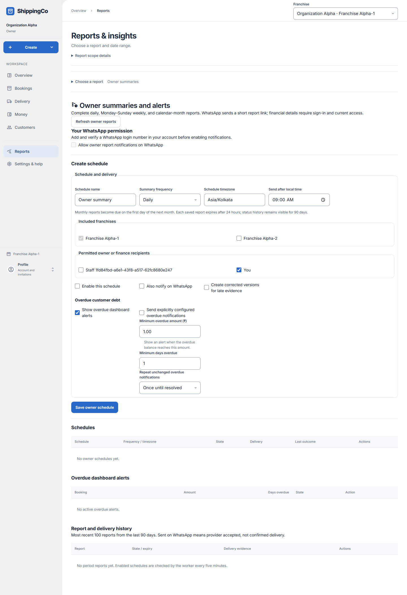

Owner summaries and alerts
Get a regular business report and see overdue customer payments.

Before you start
Open Reports, choose a report, then select Owner summaries and alerts. Only permitted staff can set up schedules. WhatsApp notifications need a verified WhatsApp login number and permission.
Set the schedule, then add optional alerts
- Open Reports, expand Choose a report, and choose What needs the owner’s attention? / Owner summaries and alerts. Refresh owner reports reloads schedules, overdue alerts and report history.
- Your WhatsApp permission applies to your own verified WhatsApp login number. Add and verify that number in your account before enabling notices. A schedule can produce in-app reports without WhatsApp notices.
- Create schedule requires a name, frequency, named timezone, local send time, at least one permitted branch and recipient. Weekly schedules also require Weekly send day. The active branch remains included; choosing branches never grants access.
- Enable this schedule controls regular runs. Also notify on WhatsApp requests a short report link, subject to recipient permission and eligibility. Private figures require sign-in and current access. There is no automatic email delivery promised here.
- Show overdue dashboard alerts reveals the overdue controls. Only then set Minimum overdue amount, Minimum days overdue and repeat frequency. These thresholds control debt alerts; they do not filter or price the ordinary summary report.
- Send explicitly configured overdue notifications is a separate choice within enabled alerts. Once until resolved avoids repeated unchanged notices; Every 24 hours or Every week allows the selected repeat period.
- Save owner schedule creates or updates the setup. In Schedules, Preview creates saved preview evidence; Edit loads the saved setup. New schedule leaves editing and starts a new setup.
- Overdue dashboard alerts shows qualifying debt. Acknowledge overdue alert records review only. It does not collect payment or cancel the balance.
- Report and delivery history shows recent runs and delivery status. Open saved owner report is available for ready reports. Saved source evidence switches between sales, overdue, expenses, custody, cash difference, unknown values and reconciliation. Previous sources / Next sources browse the saved rows.
- Create corrected versions for late evidence allows later corrected reports. Keep the capture time in mind: a saved report is not a live total. Unknown amounts, custody or due dates must not be read as zero.
Quick steps
- Read Your WhatsApp permission. Turn it on only if you want report notifications on that number.
- Fill Create schedule. Choose when it runs, which branches it includes and who receives it.
- Choose whether to enable the schedule and send WhatsApp notices. Set overdue alert limits if you need them. Select Save owner schedule.
- In Schedules, select Preview to make a saved preview, or Edit to change the setup.
- Read Overdue dashboard alerts. Select Acknowledge overdue alert after reviewing an open alert.
- Open a ready report from Report and delivery history. Choose Saved source evidence to inspect its records. Download saved owner evidence if your role allows it.
Fields on this screen
- Allow owner report notifications on WhatsApp: Your personal permission for these notices. Requires a verified WhatsApp login number and owner reporting to be enabled.
- Schedule name: Required short name, up to 80 characters; for example Morning business report.
- Summary frequency: Daily, Weekly or Monthly. Reports cover complete periods, not a live running total.
- Schedule timezone: Required. Use Asia/Kolkata for Indian time, or the correct named timezone for your business.
- Send after local time: Required time in the chosen timezone. This is when the report becomes due, not a guaranteed delivery time.
- Weekly send day: Shown for weekly reports. Choose Monday through Sunday. Weekly figures cover Monday to Sunday.
- Included franchises: Tick the branches to include. The current branch stays included. You can only use branches you are allowed to access.
- Permitted owner or finance recipients: Tick at least one permitted recipient. You means your own account; other entries identify staff accounts.
- Enable this schedule: Tick to make the schedule active. Leave off to keep its setup without regular runs.
- Also notify on WhatsApp: Request WhatsApp notices as well as in-app reports. Recipient permission and eligibility still apply. The message contains a short report link, not private financial figures.
- Create corrected versions for late evidence: Allow a later corrected report when relevant records arrive late. Original evidence is kept until its expiry.
- Show overdue dashboard alerts: Turn on alerts for customer debt that meets the limits below.
- Send explicitly configured overdue notifications: Also request notices for configured overdue alerts. This is separate from showing dashboard alerts.
- Minimum overdue amount (₹): Shown and required only when overdue dashboard alerts are enabled. Enter a positive rupee amount, with up to two decimal places. This is the balance needed to trigger an alert; it is not a payment request.
- Minimum days overdue: Shown and required only when overdue dashboard alerts are enabled. Enter a whole number from 1 to 3,650. The payment must be at least this many days late.
- Repeat unchanged overdue notifications: Choose Once until resolved, Every 24 hours or Every week.
- Saved source evidence: In a saved report, choose sales, overdue, expense, agent custody, cash difference, unknown custody, unknown due or reconciliation. Use Previous sources and Next sources to browse.
What happens next
The schedule is saved. Enabled schedules are checked by the worker every five minutes. Monthly reports become due on the first day of the next month. Saved reports expire after 24 hours; recent status history remains visible for 90 days.
If you get stuck
- No setup form: your account may have read-only access.
- Owner reporting disabled: the server has disabled this feature. Ask your administrator.
- No reports yet: enable a schedule and wait for a complete period, or use Preview.
- Saved report unavailable: it may have expired, or your access may have changed.
- Sent on WhatsApp means the provider accepted it; it does not prove delivery. For uncertain delivery, an administrator must check provider records. Do not resend blindly.
- Retry confirmed failed delivery is offered only for eligible failed notices.
- Acknowledging an overdue alert does not record a customer payment or remove the debt.
- Unknown amounts or due dates are not zero. Agent-held money includes only known recorded sources. Cash differences are not transfers or approvals.
- If offered, Retry the same owner request confirms the original request. Do this before making a new request.
Optional overdue alert settings

About this guide
Checked against the current app source on 1 November 2026. Buttons depend on your access and the current record. This guide does not give extra access.